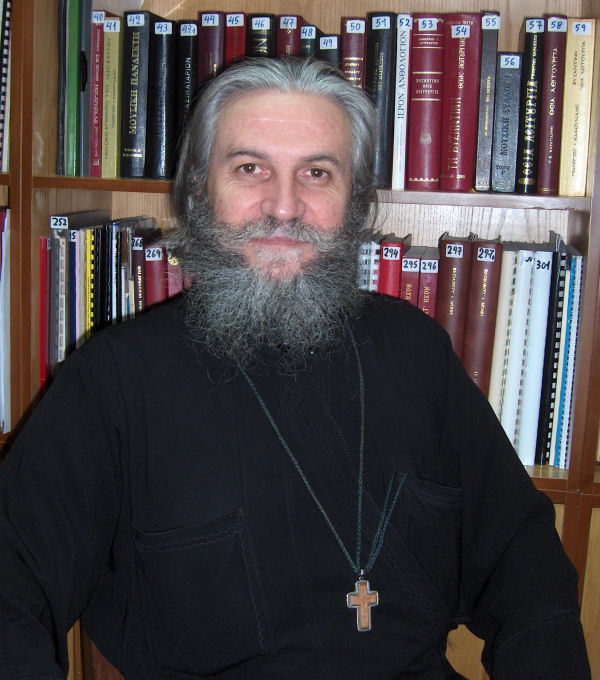

Εκφωνητική Απαγγελία / Ekphonetic Style of Chanting
Μελέτη Εκτελέσεων / A performance analysis study
The traditional way to recite the Gospel, the Epistles and other readings is in
the chroa (mode) of Kliton. The same style is used in the responses of Leitourgika
according to the Patriarchal Tradition (see relevant page [
html] on the Analogion).
Αφιέρωμα / Tribute

(image from
here, click for larger)
π. Χρήστος Κυριακόπουλος / Fr. Christos Kyriakopoulos
is the parish priest of St Dimitrios, Kifisia, Athens, Greece. Fr Christos comes
from the region of Arkadia, Peloponessos, Greece. His style is characteristic of
that particular region. Apart from a priest, he is also a well known psaltis and
singer of old traditional Greek folk songs. See a
tribute website on Fr. Christos by Nektarios Mamaloungos.
- Ευαγγέλιο Όρθρου Αναστάσεως (από CD της Ελληνικής Βυζαντινής Χορωδίας) / Gospel
of Pascha Matins (from a CD of the Greek Byzantine Choir with hymns of Pascha) [mp3, 2.9 Mb]
Ηχογραφήσεις / Recordings
Patriarchal school
Iakovos Nafpliotis, Archon Protopsaltis of the Great Church
Gospel ekphonesis [
mp3, 562 Kb] (offered by G. K. Michalakis)
Thrasyvoulos Stanitsas, Archon Protopsaltis of the Great
Church
Epistle to Hebrews [
rm,
1.4 Mb] (from ieropsaltis.com). The recording is sped up, which resulted in a high
pitch.
Tou Deipnou Sou [
rm,
332 Kb] (from cmkon.org)
Stylianos Tsolakidis Protocanonarchos of the Great Church,
Epistle to Galatians [
mp3]
(offered by G. K. Michalakis)
Leonidas Asteris , Archon Protopsaltis of the Great Church,
Ekphonesis of Apostolos [
mp3, 1.1 Mb] (from the conference organised by the Institute of Byzantine musicology in 2000, offered
by B. Zacharis)
Mt Athos school
Fr. Akakios Danielides , Danielaioi brotherhood
Apostolos of the feast of All Saints [
mp3, 5.5 Mb] (Private recording done by Lykourgos Angelopoulos and broadcasted on the
Greek radio)
Thessaloniki school
Athanasios Panagiotidis, Archon Protopsaltis of the Archdiocese
of Constantinople
Apostolos of the feast of Pentecost [
rm,
960 Kb] (from
ieropsaltis.com)
Harilaos Taliadoros Archon Protopsaltis of the Archdiocese
of Constantinople
Apostolos of the feast of All Saints [
wma, 1.1 Mb] (From the conference organised by the Institute of Byzantine musicology.
Provided by B. Zacharis)
Avraam Efthemiadis Archon Mousikodidaskalos of the Great
Church
Apostolos at a Liturgy at St Nicholas, Spata, Ilia, Greece [
mp3, 1Mb]
Dimitrios Nerantzis, Archon Didaskalos tou Apostolou of
the Great Church
Apostolos [
mp3,
440 Kb] (from analogion.net)
Apostolos [
mp3] (From the conference organised by the Institute of Byzantine musicology. Provided by B. Zacharis)
Angelos Margaritis, Archon Protopsaltis of the Archdiocese
of Constantinople
Apostolos Galatians [
rm,
440 Kb] (from houpas.net)
Nikolaos Nikolaou
Apostolos of the feast of All Saints [
wma, 1.4 Mb] (Nikolaos Nikolaou is a student of Harilaos Taliadoros)
Simon Karas school
Simon Karas
Psallontes sou ton Tokon/ O Panymnete Meter [
asx]
Gospel of Pascha Matins
[
wma]
(in soft and hard Plagal Fourth diatonic mode, another fancy name for kliton) (from
ecclesia.gr)
Ioannis Arvanitis [
mp3] (From the conference organised by the Institute of Byzantine musicology. Provided
by B. Zacharis)
Theodoros Vasileiou
Epistle reading [
rm]
(in Fourth mode "Nana", a fancy name for kliton) (from ieropsaltis.com)
Other recordings
Fr Georgios Saitanis
Gospel [
mp3]
(offered by G. K. Michalakis)
Fr Andreas Desipris
Gospel of Christmas Matins [
ra]
Gospel of Great Thursday [
ra]
(offered by G. K. Michalakis)
Georgios K. Michalakis
Epistle Reading, "paedagogical" recording [
mp3]
Live (Epistle to Hebrews) [
mp3]
Epistle to the Corinthians [
wma, 700 Kb]
Paedagogical recording in French [not available on-line anymore]. Offered by G. K. Michalakis with the following comments: "French Apostolos
recording with progressive Kliton/Spatheion pitch upheavals. Explains the origins
of the slavonic "opera" semi-tones". Some Greek psaltis do one pitch upheaval only
(eg. Kamarados School). In Patriarchal tradition: No pitch upheaval for the Apostolos.
Di of beginning = Di of conclusion. In Orthros= Eothinon reading: one pitch upheaval
= permitted... (listen to Fr. Andreas Desipris) To get things right, KE = LA must
be big... (as "usual"... this comment is simply a reminder, and not so as to assume
that LA = KE is any larger than usual...).
Emmanouel Hatzimarkos
Aspile Amolynte [
rm]
Yperendokse [
rm]
Tin Pasan Elpida Mou [
rm]
(from ieropsaltis.com)
Konstantinos Tasopoulos
Epistle Reading in Plagal Fourth Mode (really Kliton) [
rm]
(from ieropsaltis.com)
Fotios Ketsetzis, Archon Protopsaltis of the Archdiocese
of North and South America
Epistle Reading at the Funeral of late Archbishop of America, Iakovos. [
mp3, 2.7 Mb]
Monk from St. Cyprian and Justina's monastery
Apostolos of the feast of All Saints [
wma] (from synodinresistance.gr)
Haris Symeonidis
Simeron Krematai [
youtube]
(video).
Arabs
Metr. Elias Kurban (Lebanon)
Holy Saturday Gospel [
mp3, 3.7 Mb] (offered by N. Nahas)
Fr. Pandeleimon (Yeronda of
the Dormition of Our Lady Monastery in Hamatoura, Lebabon)
[
mp3, 2.1 Mb] (from Choir of Mount Lebanon CD (buy it
here), offered by
Haleem Sharback). The same Gospel reading made into a youtube video (offered Azar, with permission from Subdeacon Karim El Far) [
html]
Non traditional styles
Fr. Ploutarxos Konstantinidis
Constantinopolitan priest, "external" (dervish music) ekphonetic style. Gospel in
Turkish [
rm]
(from ieropsaltis.com)
Emmanouel Hatzimarkos Experiments with reading in modes
other than the traditional "kliton".
Epistle Reading in First Mode [
rm]
Epistle Reading in Third Mode [
rm]
Epistle Reading in Plagal First Mode [
rm]
Epistle Reading in Plagal Second Mode [
rm]
Epistle Reading in Barys Mode [
rm]
Epistle Reading "in Two Modes" [
rm]
(originally from ieropsaltis.com)
Evangelos Gikas
Experiments with untraditional callophonic phrases Epistle of Wedding Service [
rm] (from ieropsaltis.com)
Georgios Hatzichronoglou
Chanting the Epistle of Christmas (non-ekphonetic style) [
wma] (originally from apostoliki-diakonia.gr)
Abbot Gregorios of Docheiariou monastery
Gospel of the Little Paraklesis [
wma]
Ραδιοφωνικές Εκπομπές / Radio shows
Ραδιοφωνική εκπομπή "Ψαλτικής Απανθίσματα" για την εκφωνητική απαγγελία. Επιμελούνται
οι κ. Βαγγέλης Λιναρδάκης και Εμμανουήλ Σουργιαδάκης του συλλόγου Ιεροψαλτών "Ανδρέας
Κρήτης" της Ιεράς Αρχιεπισκοπής Κρήτης, 7 Οκτ 2007 [
mp3, 15.5 Mb].
Radio show "Psaltikis Apanthismata" on ekphonetic style by Evangelos Linardakis
and Emmanouel Sourgiadakis of the Association of Psaltai "Andreas Kretes" of the
Archdiocese of Crete, 7 Oct 2007 [
mp3, 15.5 Mb].
{kind=link}